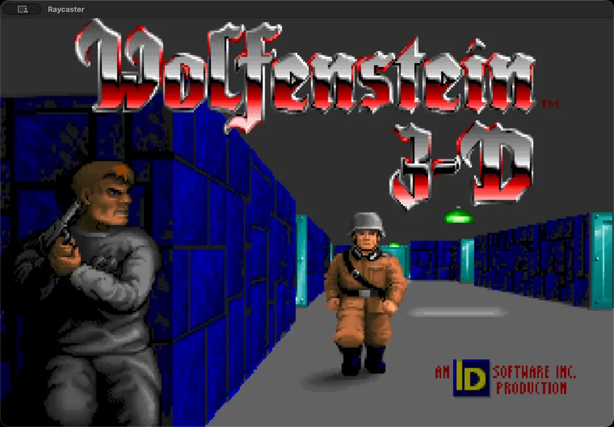

Pygame Wolfenstein
A semi-complete reimplementation of Wolfenstein 3D using pygame. Includes texture-mapping, depth-buffer occluded sprites, level-data processing, and a basic enemy AI with sound propagation detection and programmable spawn-flags and behaviors.
GitHub Repo